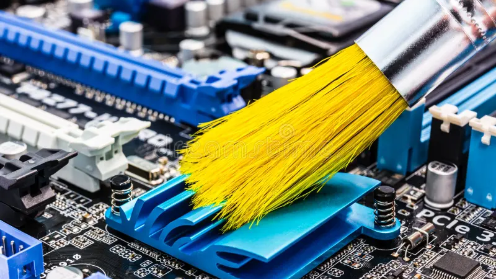
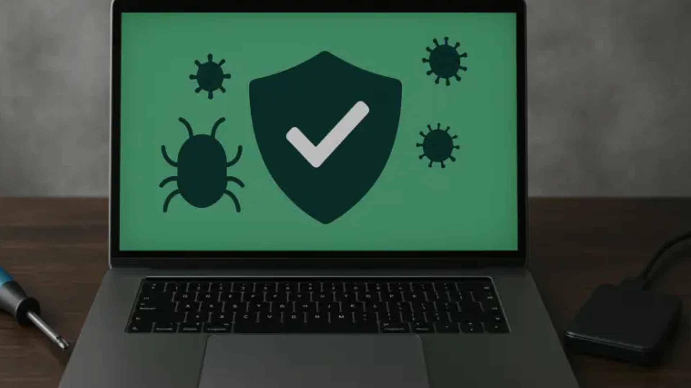
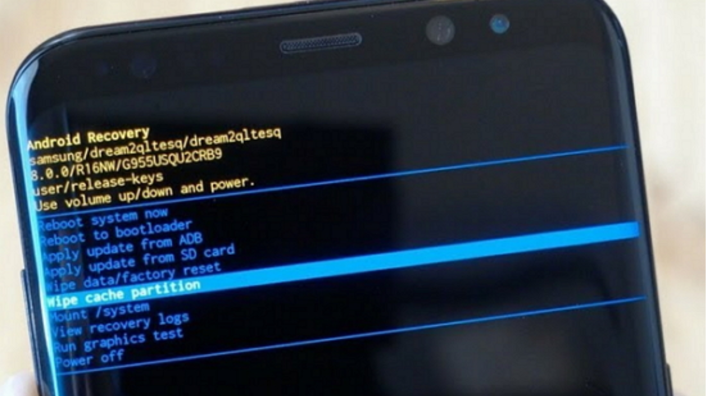
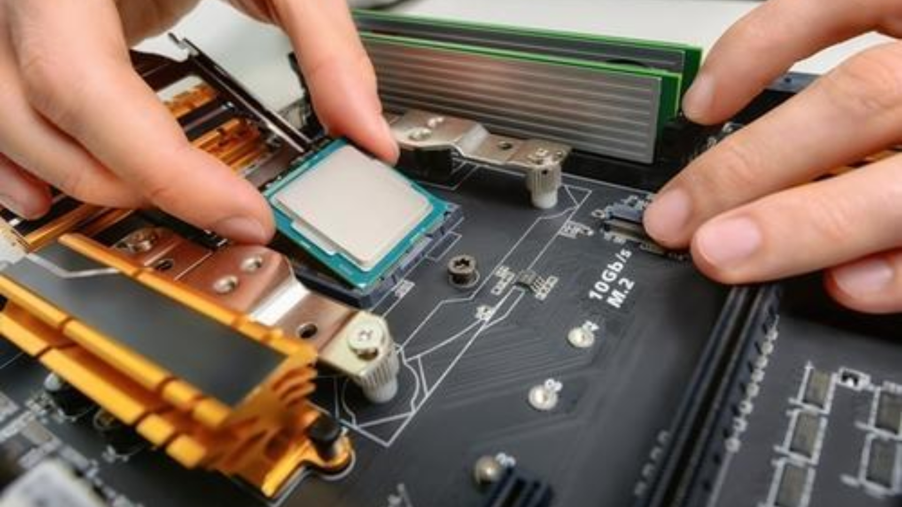
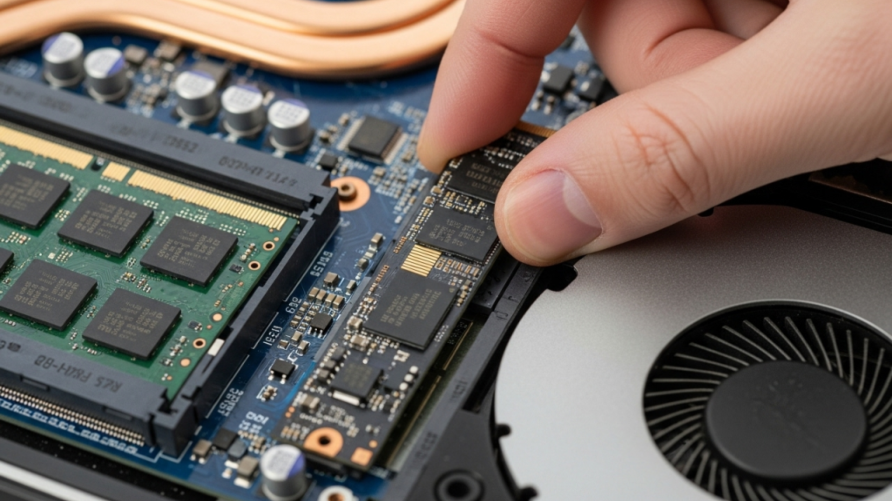
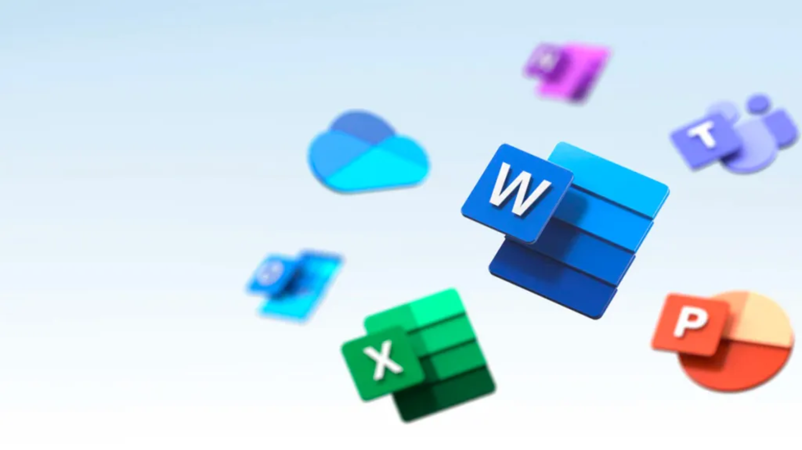
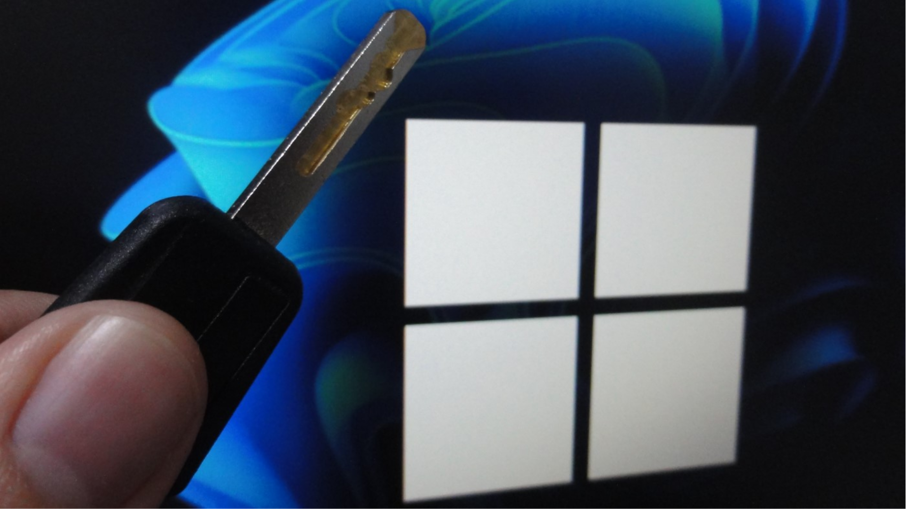

O profissional reinstala o sistema operacional do computador, removendo arquivos e programas desnecessários. Quando solicitado, realiza um backup para salvar os arquivos importantes antes da formatação. Também pode instalar o pacote Office e ativar o Windows com uma licença válida.

O profissional abre o computador com cuidado e remove a poeira acumulada nos componentes, ventoinhas e filtros. Nos computadores gamers, também verifica a refrigeração para ajudar a evitar o superaquecimento.

O profissional utiliza ferramentas de segurança para identificar e remover vírus e programas maliciosos. Também verifica aplicativos suspeitos e orienta o cliente sobre como proteger melhor o aparelho.
O profissional realiza procedimentos técnicos para recuperar o acesso a celulares bloqueados pela proteção FRP, verificando a propriedade do aparelho e utilizando os métodos oficiais de recuperação da conta Google.

O profissional restaura o celular para as configurações de fábrica, removendo dados, aplicativos e configurações pessoais. Antes, orienta o cliente a salvar seus arquivos importantes.

O profissional monta o computador, instalando processador, placa-mãe, memória RAM, placa de vídeo, armazenamento e fonte. Depois, organiza os cabos, verifica o funcionamento das peças e realiza a formatação e instalação do sistema operacional..

O profissional instala ou substitui o HD ou SSD por uma unidade de armazenamento mais rápida. Depois, pode transferir os arquivos e o sistema antigo ou realizar uma nova instalação do Windows.

O profissional instala e configura programas como Word, Excel e PowerPoint, verificando a compatibilidade com o sistema operacional e utilizando uma licença válida quando necessária.

O profissional realiza a ativação do Windows por meio de uma licença original e compatível com a versão instalada, garantindo acesso aos recursos do sistema e às atualizações disponíveis.